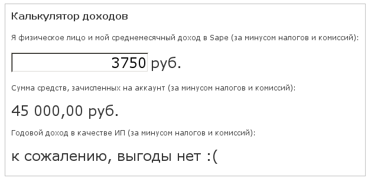
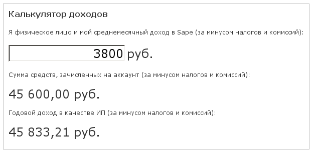

Консультации для вебмастеров (update 2)
29.01.2013
Уважаемые пользователи!
В связи с тем, что с 01.01.2013 вступил в силу Федеральный закон № 243-ФЗ от 03.12.2012 «О внесении изменений в отдельные законодательные акты Российской Федерации по вопросам обязательного пенсионного страхования» (далее ФЗ-243), были внесены изменения в калькулятор доходов.
Актуальная версия калькулятора находится в этом посте.
Предыдущие версии статьи: 2012 год, 2011 год.
Уважаемые пользователи, рады сообщить об открытии в нашем блоге новой рубрики, посвященной нюансам юридической и бухгалтерской работы в Sape для индивидуальных предпринимателей.
Здесь мы будем рассказывать вам о бухгалтерских тонкостях и преимуществах работы в качестве индивидуального предпринимателя, далее ИП на упрощенной системе налогообложения, базой налогообложения которого являются "доходы" (при условии отсутствия наемных работников). Как показывает практика, многие пользователи нашей системы, работающие как физические лица, не знают, что зарегистрировавшись в качестве индивидуального предпринимателя, можно значительно увеличить свой доход.
|
Калькулятор доходов Я физическое лицо и мой среднемесячный доход в Sape (за минусом налогов и комиссий):  |

Сегодняшний наш пост посвящён базовым понятиям.
Мы рекомендуем всем пользователям – налоговым резидентам РФ, зарабатывающим в Sape больше, чем ~3 800 рублей в месяц (за минусом налогов и комиссий) зарегистрироваться в качестве ИП. Подобный шаг позволит серьёзно увеличить свой доход.
Для наглядного подтверждения сказанного, приводим расчёт дохода пользователя Sape, работающего как физическое лицо или как ИП:
Пусть Х – доход (стоимость от размещения информационных материалов), тогда удержания составят
для физического лица:
Х*0,09 – лицензионное вознаграждение ООО «Сапе»;
Х*0,01 – агентское вознаграждение ООО «Софтвэй»;
Х*0,30 – компенсация расходов агента в соответствии с п.3.4 агентского договора;
Х*0,13 – НДФЛ;
для ИП:
Х*0,09 – лицензионное вознаграждение ООО «Сапе»;
Х*0,01 – агентское вознаграждение ООО «Софтвэй»;
Х*0,06 – налог 6% от полученного дохода;
фиксированный размер страховых взносов на обязательное страхование за год.
Размеры годовых взносов рассчитываются из установленного размера МРОТ для расчёта страховых взносов, который с 1 января 2013 года составит 5 205,00 рублей.
Рассчитаем ниже размеры годовых взносов на обязательное страхование.
По обязательному пенсионному страхованию: из расчёта произведения суммы двойного МРОТ и ставки пенсионного страхового взноса (26%), увеличенного в 12 раз, то есть
2 * 5205 * 0,26 * 12 = 32 479,20 (руб).
По обязательному медицинскому страхованию: из расчёта произведения МРОТ и ставки страхового взноса на ОМС (5,1%), увеличенного в 12 раз, то есть
5205 * 0,051 * 12 = 3 185,46 (руб).
В соответствии с п.5 ст.14 Федерального закона №212-ФЗ «О страховых взносах в Пенсионный фонд Российской Федерации, Фонд социального страхования Российской Федерации, Федеральный фонд обязательного медицинского страхования и территориальные фонды обязательного медицинского страхования» (далее ФЗ-212) индивидуальные предприниматели не исчисляют и не уплачивают страховые взносы по обязательному социальному страхованию.
Таким образом, сумма страховых взносов за год для ИП согласно ФЗ-212 и ФЗ-243 получается
32 479,20 + 3 185,46 = 35 664,66 (руб.) за год.
Тогда составим уравнение, с помощью которого рассчитаем минимальный доход, при котором выгодно зарегистрироваться в качестве индивидуального предпринимателя:
Х-Х*0,09-Х*0,01-Х*0,06-35 664,66 = Х-Х*0,09-Х*0,01-Х*0,13-Х*0,30
Отсюда Х = 96 390,97 (руб).
Если Вы будете зарабатывать больше, чем 96 390,97 рублей в год (или 8 032,60 рублей в месяц, без вычета налогов и комиссий), то с дохода, превышающего эту сумму, Вы будете тратить только 6%, вместо 43%, работая в качестве физического лица.
В соответствии со 346.21 НК РФ, ИП, применяющие упрощенную систему налогообложения, не производящие выплаты и иные вознаграждения физическим лицам и уплачивающие страховые взносы в Пенсионный фонд РФ и фонды обязательного медицинского страхования в размере, определяемом исходя из стоимости страхового года, могут дополнительно уменьшить сумму налога (авансовых платежей по налогу), исчисленную за налоговый (отчетный) период, на сумму страховых взносов.
В заключении необходимо отметить, что статус индивидуального предпринимателя – официальный, подтверждённый государством. Например, благодаря ему вы сможете расплачиваться безналичным расчётом с другими фирмами и предпринимателями при заказе или выполнении работ или услуг в интернете, оплате товаров. Страховые взносы, уплачиваемые ИП, будут участвовать в формировании ваших пенсионных накоплений.
Работать в качестве индивидуального предпринимателя не только удобно, но и выгодно! Вы можете снизить налоговую нагрузку и увеличить свой доход не только при работе в Sape, но и при участии в других партнёрских программах в интернете или от других видов бизнеса!
В следующих постах рубрики мы расскажем вам о простых шагах по регистрации ИП и ведении бухгалтерского учета при помощи сервиса «Моё дело».